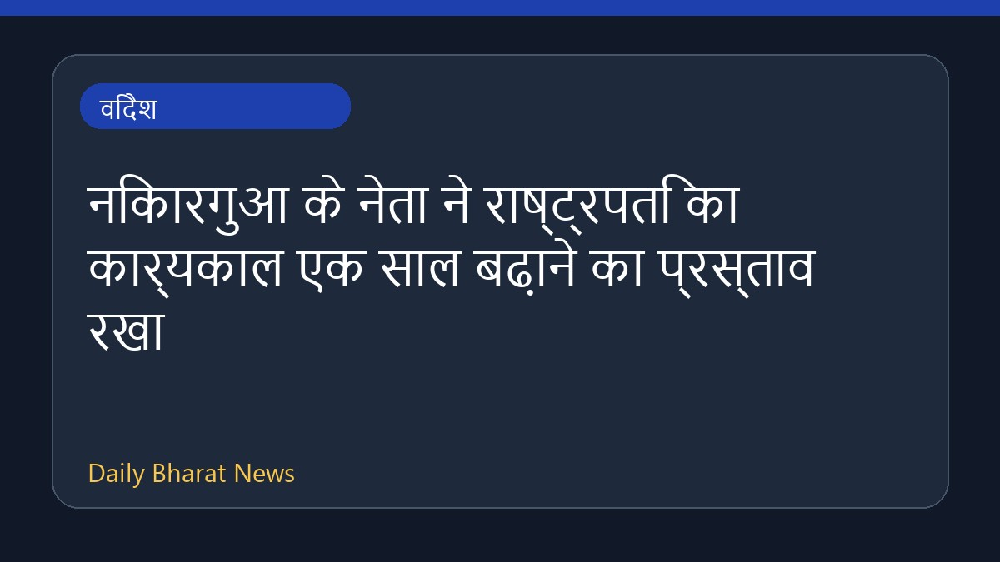

निकारगुआ के नेता ने राष्ट्रपति का कार्यकाल एक साल बढ़ाने का प्रस्ताव रखा

निकारगुआ के नेता डैनियल ओर्टेगा ने राष्ट्रपति का कार्यकाल एक और साल बढ़ाने का प्रस्ताव रखा है। यह पहली बार नहीं है कि देश के संविधान में संशोधन किया गया हो ताकि 80 वर्षीय नेता को लंबे समय तक सत्ता में रहने की अनुमति मिल सके। इस संबंध में विवरण अभी सीमित हैं, लेकिन यह कदम उनके लंबे राजनीतिक सफर और सत्ता पर पकड़ बनाए रखने के प्रयासों का हिस्सा माना जा रहा है।
मूल स्रोत: BBC World
Nicaraguan leader proposes extending presidential term by another year ↗
Nicaraguan leader proposes extending presidential term by another year ↗